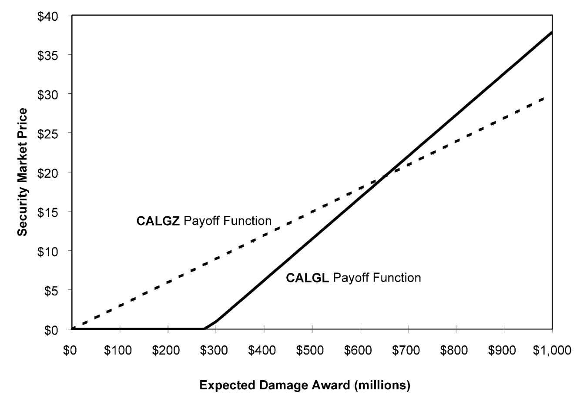
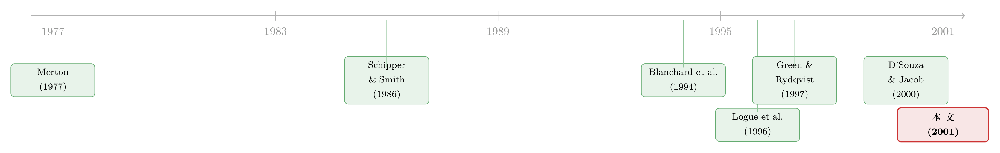

一场官司，被「切」下来单独挂牌——一只证券如何替市场给诉讼定了价
本文读的是 Esty (2001, Journal of Financial Economics)：CalFed 把自己对美国政府的一场官司「切」下来，做成一只单独挂牌交易的证券（CALGZ）分给股东。仅仅是宣布发行这只证券，母公司股价就跳涨了 4.26%（t=2.21）。作者用排除法把这部分超额收益的最可能解释落在「让公司更容易被收购」上；更妙的是，这只证券一旦开始交易，它的价格就成了市场对判赔金额的实时估计，它的 beta 则泄露了市场对「这官司还要打多久」的预期。
1 引言：一场官司，到底值多少钱？
先想象一个让分析师头疼的场面。
一家储贷机构（S&L），账面上趴着一项几乎没人算得清的资产——一场对美国联邦政府的违约诉讼。赢了，可能进账几亿美元；输了，一分没有。这场官司没有利息、没有中期现金流、判决遥遥无期，连「该用哪套损失理论」都还在法庭上吵。它就这样被埋在公司的整张资产负债表里，和存款、按揭、网点价值混在一起。你买这家公司的股票，等于同时买下了一家「经营特许权」和一张「彩票」——可你根本不知道自己为彩票付了多少钱。
一位投资银行家当年的原话很传神：「你真正买到的，是一张彩票加一份经营特许权的组合……很难说清你是不是为那份特许权多付了钱，只因为有些本该归到一次性事件上的东西被算了进去。」
这就是 CalFed Bancorp 在 1990 年代面对的真实困境。那么，一个自然的问题是：能不能把这张「彩票」从公司里拆出来，让它自己去市场上找一个价格？
CalFed 真的这么干了。1995 年 3 月，它宣布要发行一只「诉讼参与证券」（litigation participation security，交易代码 CALGZ），按一股拆十份发给股东，让持有人按比例分享这场官司未来的判赔——如果有的话。本文研究的，就是这只在金融史上颇为罕见的证券，以及它意外释放出的大量信息。
2 故事的来龙去脉：监管善意如何变成一纸诉状
要理解这只证券，得先回到 1980 年代初那场储贷业的塌方。
当时利率倒挂，几百家靠「短借长贷」吃利差的储贷机构在一夜之间资不抵债。监管者不愿意直接关门赔付存款保险，于是鼓励健康的储贷机构去收购这些烂摊子，并允许把收购价与被收购方净资产之间的差额，作为一项资产计入账面——这就是 监管商誉（supervisory goodwill, SGW）。按收购协议，这笔商誉可以在最长 40 年里直线摊销，还能用来充抵最低资本要求。CalFed 在 1982–1983 年间一口气吞下六家濒死机构，由此产生了 $618 百万的 SGW。
说白了，这是监管者送给收购方的一份「价外看涨期权」：你帮我处理烂摊子，我给你 40 年时间慢慢把这块商誉「摊」成利润（Merton, 1977 早就指出，存款保险本身就是一份期权）。
但真正关键的转折在 1989 年。 《金融机构改革、复兴与强制执行法案》（FIRREA）生效，一纸把规则改了：大幅压缩商誉摊销期、把 SGW 逐步踢出合格资本。对当时账上还有 $485.4 百万 SGW 的 CalFed 来说，摊销表被硬生生砍掉了多达 30 年。许多机构因此跌破资本红线，被迫关门或增资。于是反转出现：总共 126 家储贷机构掉头起诉联邦政府违约。用最高法院大法官 Souter 后来在 7 比 2 多数意见里的话说——「如果当初就知道政府能反手改写引诱它们入局的规则，健康的储贷机构去收购那些病号，简直是疯了。」
诉讼分两步走。第一步定责任：1995 年 8 月联邦索赔法院判政府违约，1996 年 7 月被最高法院维持。第二步定金额——而这一步，法官们给出了天差地别的答案：Glendale 拿到 $909 百万，CalFed 只拿到 $23 百万。这种巨大的不确定性，正是 CalFed 那只证券要去定价的东西。
3 把官司「证券化」：CALGZ 究竟是什么
在责任尚未尘埃落定的 1995 年，CalFed 抢先把官司拆了出来。
它向股东按一股配十份的比例，分发了 5,075,549 份 CALGZ（法律名冗长，下文一律用代码），在 NASDAQ 挂牌。持有人有权分得这场官司最终回收金额的 25.38%——但前提是先扣除税款、发行成本与诉讼费用。这个看上去莫名其妙的零头（25.38%），不过是「分出去的份数 ÷ 全部股份」算出来的结果。一年后的 1996 年 7 月，CalFed 在与 First Nationwide 合并时又发了一只次级的 CALGL，分享 60% 的判赔，但要排在税款、费用、CALGZ 持有人、以及给 First Nationwide 的 $125 百万固定支付之后。
注意一个容易被名字骗过去的细节：CALGZ 名义上是「按比例分成」，实质上却是一份看涨期权。因为各项成本与费用享有优先受偿权，只有当判赔超过这些成本时，持有人才拿得到钱；而且随着诉讼费用一年年累积，它的「期权属性」会越来越强。
把它的收益写成公式，一目了然：
$$ \text{Payoff}_{CALGZ} = 0.2538 \times \max\big(D - C,\, 0\big) $$
其中 \(D\) 是法院最终判定的回收金额，\(C\) 是税款、发行与诉讼成本之和。这正是一份执行价为 \(C\) 的看涨期权——标的，是一场官司。（把公司里某项资产看成期权、再据此定价的思路，可参见《公司随时都可能倒下，期权定价却只盯着还债那一天》。）
CALGZ 还有两个对后文至关重要的特征：它不支付任何判决前利息——联邦法规禁止对政府败诉判决计息，除非原合同明确约定，而绝大多数监管合并协议都没有这一条；它也没有投票权、不能左右诉讼进程。
4 第一个谜：宣布发行，股价为什么涨了 4.26%？
CalFed 宣布发行 CALGZ 的当天（1995 年 3 月 14 日），用标准事件研究法（250 天估计窗、市场模型、S&P 500 为市场组合、Mikkelson and Ruback, 1991 的显著性检验）算出来，母公司有 4.26% 的两日超额收益（t=2.21），对应市值增加约 $21.7 百万。这一结果和既有定向股票文献里 2.1%–3.4% 的区间一致，但略高。
单只证券、单一观测，要「证明」任何一个假说几乎不可能。作者的做法很诚实：逐一排除那些预测负收益的解释，看剩下哪一个最站得住。
首先排除的，是那些注定为负的。 发行成本（交易成本）只会拖累收益；个人税更糟——CALGZ 在两个意义上是税收劣势的：发行本身被视为应税的财产分配，将来一旦拿到判赔，股东收到的是按普通收入征税的现金，而不是可以递延的资本利得。财务困境成本同理：真要把回款分给股东，反而抬高了杠杆与违约概率（不过 OTS 对资本不足机构的分配限制，又把这条路堵住了）。
接着是那些「听上去对、其实不适用」的。 定向股票的经典好处——提升资产透明度、改善管理层激励、便于融资——在这里几乎都失灵：
- 透明度：CalFed 自己声称发行是为了「让官司的内含价值从持续经营价值里剥离出来」，可那些真正能产生信息、确立关键先例的庭审，无论 CalFed 发不发证券都照样进行。这只证券并没有揭示任何此前不在公众视野里的信息。
- 激励：按比例把 CALGZ 分给全体股东，并不会让 CalFed 的律师或专家证人更卖力。更要命的是，发行后 CalFed 在制度上承担 100% 的诉讼成本，却只享有 74.6% 的好处——这反而削弱了它打官司的积极性。而且 CEO 当时一股不持，17 名内部人合计只持有 0.28% 的股票。
然后是那个最难排除的：自由现金流假说。 Jensen (1986) 说经理人惯于挥霍自由现金流，Blanchard, Lopez-de-Silanes and Shleifer (1994) 在「打官司拿到意外之财的公司」里证实了这一点（关于这条主线，可参见《现金为什么一定要「还」出去？——四十年后，重读 Jensen 的自由现金流》）。作者设计了一个巧妙的检验：CalFed 和 CALGZ 是对同一笔资产的两个按比例求偿权，理论上两者隐含的损失估计应当一致。初步结果显示 CalFed 没有为预期回款拿到「全额信用」，但测量误差恰恰会把检验推向这个结论；改用更精细、误差更小的检验后，检验功效下降，作者无法拒绝自由现金流假说。换句话说，它仍是一个可信的候选解释。
但真正最可能的那一个，是「收购便利」。 把官司这个高风险资产单独切出来、并赋予它一个市场决定的独立价值，等于替潜在收购方解决了「我没法给这家公司的官司估价、所以不敢出手」的难题。两个旁证：Coast Federal 与 Golden State 仅仅是传出要发类似证券，就分别录得 4.44%（t=2.04）和 6.21%（t=2.25）的两日超额收益——而这两家随后都成了被收购对象。Golden State 自己的措辞几乎是 CalFed 的翻版：「让市场能把待决商誉诉讼的价值，与银行的特许权价值分开追踪。」
5 第二个谜，也是本文真正的妙处：一只证券，两台「读数仪」
如果说前半篇是在解释「股价为什么涨」，那么后半篇才是这篇论文最有想象力的地方——这只证券一旦上市交易，它本身就成了一台前所未有的信息机器。
价格：市场替你算出的判赔金额
CALGZ 的市价，本质上是市场对「这场官司最终值多少」的实时投票。把它的价格代回上面那条看涨期权式的收益函数，就能反推出市场隐含的损失估计。结果相当惊人：在 Glendale 和 CalFed 判决出来之前，市场给 CalFed 的损失估计是 $400–$500 百万，给全部 126 家原告的合计估计约 $50 亿——远低于当时大众媒体动辄 $200–$300 亿的耸动数字，却仍是一笔不容小觑的政府潜在负债。而当 Glendale 拿到 $909 百万、CalFed 却只拿到 $23 百万的判决落地后，价格应声暴跌：CalFed 的隐含损失估计跌到约 $80 百万，全部原告合计跌到不足 $30 亿。
图 1 画的正是这台「读数仪」的工作原理——证券价格如何随判赔金额变化，以及如何从观测到的市价反推出市场心里的那个数。

Figure 1: Security market price as a function of goodwill damage award. The market prices for
beta：市场替你估算的「这官司还要打多久」
更微妙的是 beta。整段样本期里，CALGZ 的 beta 是 0.53；但它起初高于 1.00，到样本末尾却跌到与零无显著差异。这条下行轨迹本身，就藏着信息。
一种解读是：它反映了市场对「何时能拿到判赔」这一时间预期的变化。
- 起初，这只不付判决前利息、判赔金额又高度不确定的证券，交易起来像一只有利率风险（因为没有判决前利息）和信用风险（因为最终金额未知）的、风险偏高的中期债券。这样一只债券的 beta 会是正的，但通常不该超过 1.00。那么 beta 一度高于 1 又怎么解释？这就要请出损失理论了：如果法院采用「事后（ex post）损失理论」——依据违约之后才知道的信息（如已实现的行业盈利或股票收益）来确定损失——那么损失金额就会与市场走势高度相关，从而把 beta 推高。换句话说，早期高 beta 透露了市场对法院可能采用何种损失口径的某种预期。
- 随着庭审推进、损失的不确定性逐步消退，这只证券越来越像一只更安全的短期债券，beta 也就一路滑向零。
这是全文最漂亮的一笔：同一只证券，价格替你读出「值多少」，beta 替你读出「等多久」。 一个被市场冷落、学界几乎无人问津的小众证券，竟能吐出关于一桩重大诉讼的如此丰富的信息。
6 文献脉络
把这篇论文放回它生长的那条线里看，会更清楚它的位置。
最上游，是把公司里某项资产理解为期权的思路——Merton (1977) 用期权定价给存款保险与贷款担保估值，正是这条思路在金融监管里的奠基之作；而 CALGZ 这种「对一场官司的看涨期权」，是它一个极端而纯粹的现实样本。
往下，是公司重组与定向股票（targeted stock）这条经验文献。Schipper and Smith (1983, 1986) 研究自愿分立（spin-off）与股权切离（equity carve-out）的股价效应，奠定了「重组通过提升资产透明度、改善激励而创造价值」的经典叙事（关于分立创造价值的机制，可参见《拆掉一家公司，是为了让老板「坐不住」》）。Logue, Seward and Walsh (1996) 把目光转向定向股票，随后 Zuta (1999)、D'Souza and Jacob (2000)、Billett and Mauer (2000)、Elder and Westra (2000) 等一连串研究记录了发行的正向公告效应与后续表现。本文的特别之处在于：CALGZ 虽是定向股票的一种，却不挂钩任何经营单元，而是挂钩一场官司的结果——于是那些经典解释统统失灵，逼出了「收购便利」这个新答案。
还有一条侧线，关于非系统性风险与彩票式证券的定价。Green and Rydqvist (1997) 对瑞典彩票债券的研究、Cornell and Green (1991) 对低评级债券基金的分析，都在追问「投资者如何给这种带博彩色彩、回报偏态的资产定价」——这与 CALGZ 隐含估计是否被流动性、税收或彩票偏好扭曲的疑问，遥相呼应。

本文正处在这三条线的交汇点：用一个 Merton 式的期权视角，去解一个定向股票文献里从未出现过的样本，并顺手回答了「市场如何给一张彩票定价」。
7 评论与延伸（Q&A + 研究方向）
(a) 几个可能的疑问
Q：CALGZ 和普通的定向股票、分立到底差在哪？
普通定向股票（tracking stock）挂钩的是某个经营分部的利润，分立则把分部彻底剥离成独立公司。CALGZ 挂钩的既不是分部也不是独立实体，而是一场诉讼的或有判赔——没有经营、没有中期现金流、没有投票权。正因为如此，提升管理层激励、改善信息披露这些常规价值来源都对它无效，作者才不得不另寻解释。
Q：单只证券、单一观测，凭什么谈得上「识别」？
严格说，谈不上因果识别，作者也很坦诚。他的策略是排除法加旁证：先剔除所有预测负收益的假说，再用 Coast 和 Golden State 两个「传闻发行」事件做佐证（4.44% 与 6.21%）。但这两个事件都有污染——Coast 当时正深陷收购传闻，Golden State 的公告又撞上 1997 年 10 月的剧烈波动。所以结论只能说「最可能」，而非「被证明」。
Q：自由现金流假说既然「无法拒绝」，凭什么把功劳记给收购便利？
这恰恰是文章里最微妙的地方。自由现金流检验之所以无法拒绝，部分原因是测量误差削弱了检验功效——「无法拒绝」不等于「成立」。而收购便利假说有更直接的旁证：三家发行（或传闻发行）证券的公司，后来都成了被收购对象。作者据此判断，对 CalFed 而言收购便利是主因，但对体量更大、更难被收购的 Glendale，自由现金流可能才是主导。
Q：为什么 beta 会从高于 1 一路跌到零？
这是「时间」与「不确定性」在退潮。早期证券像一只不计息、金额未定的风险中期债券，叠加「事后损失理论」会让判赔与市场高度相关，把 beta 顶上 1.00 以上；随着庭审推进、金额不确定性消退、预计拿到钱的时间临近，它越来越像一只安全的短期债券，beta 自然趋零。beta 的时间路径，因此成了市场对「审判还要拖多久、采用哪套损失口径」的隐性读数。
Q：从价格反推出来的「市场损失估计」，可信吗？
要打个折扣。CALGZ 流动性差、税收劣势明显，还带有彩票式的回报偏态——Green and Rydqvist (1997) 就发现彩票债券存在系统性的定价偏离。这些都可能让隐含估计偏离「真实」期望损失。但相对价值仍有意义：它远低于媒体的
$200–$300亿喧嚣，又随判决大幅重定价，说明市场至少在理性地消化信息。
Q：CalFed 承担 100% 成本却只拿 74.6% 好处，这岂不是损害了打官司的积极性？
是的，这正是作者用来反驳「激励改善」假说的关键证据之一。发行后 CalFed 在制度上更没有动力去硬打官司，尤其在判赔金额很小时。这说明 CALGZ 的价值绝不来自激励，反而带来了轻微的激励扭曲——更印证了价值另有来源（收购便利 / 自由现金流）。
(b) 几个可能的研究问题与提案
1. 诉讼证券的流动性溢价/折价。
【经济故事】CALGZ、CALGL，以及 Meritor (MTOR)、Benjamin Franklin (BENJ)、Golden State 的诉讼跟踪权证，构成了一组「纯诉讼」证券。它们流动性极差、回报高度偏态，是检验 Green-Rydqvist 式「非系统性风险与彩票偏好定价」的天然实验场。 【可行性】中。需要逐笔/日度交易数据（部分在 NASDAQ 可得），样本极小是硬伤，更适合做成跨证券的临床比较而非大样本回归。
2. 公司债持有人与股东在「或有负债」上的分歧。
【经济故事】一场官司对股东是看涨期权，对债权人却可能是悬在头上的或有负债。当或有负债被单独挂牌定价时，股价与信用利差（或 CDS）应当出现可观测的反向反应。这是把「同一冲击在资本结构上下游分裂定价」做实的好场景。 【可行性】中。需要发行人同时有公开债与 CDS（CalFed 体量够大），并围绕判决日做事件研究。识别干净，但符合条件的发行人不多。
3. 「收购便利假说」的大样本检验。
【经济故事】本文的核心猜想是「把难定价的风险资产单独切出来 → 公司更易被收购」。这可以推广到所有把或有资产/负债剥离挂牌的情形，检验剥离后的被收购概率与溢价是否系统性上升。 【可行性】中。可用全部 SGW 诉讼证券（CalFed、Coast、Golden State、MTOR、BENJ）的后续收购结局做小样本，再扩展到现代的诉讼融资（litigation finance）与索赔权交易。样本量仍是约束。
4. 把「证券价格当损失读数仪」的方法移植到信用市场。
【经济故事】本文证明了一只挂钩或有结果的证券，其价格与 beta 能反推出市场对「金额」与「时间」的预期。同样的思路可用于挂钩监管罚款、环境诉讼、专利侵权赔偿的或有索赔权，构造市场化的「预期赔付」与「预期了结时点」指标。 【可行性】低-中。难点在于此类可交易工具稀少、合约异质性高；更现实的路径是先在少数有公开交易索赔权的案例上做概念验证。
8 我的判断
这篇论文的贡献，不在于跑了多漂亮的回归——它只有一只证券、一个公告日，统计上几乎不可能「证明」什么。它的价值在于视角：它把一桩被学界忽视、却将确立重大法律先例的诉讼，翻译成了一个可以用金融语言阅读的对象，并示范了「价格读金额、beta 读时间」这套从单一证券中榨取信息的方法。把官司当看涨期权、把 beta 的时间路径当不确定性的读数仪，这两笔都很见功力。
对识别的担忧也很直白：单一观测加排除法，注定只能给出「最可能」而非「被证明」的因果；隐含损失估计受流动性、税收与彩票偏好的多重污染；两个旁证事件本身又都不干净。作者对这些局限相当诚实，没有过度兜售——这恰恰是临床研究（clinical study）该有的姿态。
我接下来最想看到的，是有人把这套「或有索赔证券化 → 价格/beta 提取信息」的方法，搬到今天数据更厚的场景里去：现代的诉讼融资、监管罚款的或有负债、乃至信用市场里挂钩或有事件的工具。CalFed 是一个二十多年前的孤例，但它提出的那个问题——怎样给一个没有现金流、只有不确定结果的资产定价，又怎样反过来从价格里读出市场的预期——至今没有过时。
参考文献
Blanchard, O. J., Lopez-de-Silanes, F., Shleifer, A. (1994). What do firms do with cash windfalls? Journal of Financial Economics 36, 337–360.
Cornell, B., Green, K. (1991). The investment performance of low-grade bond funds. The Journal of Finance 46, 29–48.
D'Souza, J., Jacob, J. (2000). Why firms issue targeted stock. Journal of Financial Economics 56, 459–483.
Esty, B. C. (2001). The information content of litigation participation securities: The case of CalFed Bancorp. Journal of Financial Economics 60, 371–399.
Green, R. C., Rydqvist, K. (1997). The valuation of non-systematic risks and the pricing of Swedish lottery bonds. Review of Financial Studies 10, 447–480.
Jensen, M. C. (1986). Agency costs of free cash flow, corporate finance, and takeovers. American Economic Review 76, 323–329.
Logue, D. E., Seward, J. K., Walsh, J. P. (1996). Rearranging residual claims: A case for targeted stock. Financial Management 25, 43–61.
Merton, R. C. (1977). An analytic derivation of the cost of deposit insurance and loan guarantees: An application of modern option pricing theory. Journal of Banking and Finance 1, 3–11.
Merton, R. C. (1987). A simple model of capital market equilibrium with incomplete information. Journal of Finance 42, 483–510.
Mikkelson, W. H., Ruback, R. S. (1991). Targeted repurchases and common stock returns. Rand Journal of Economics 22, 544–561.
Schipper, K., Smith, A. (1986). A comparison of equity carve-outs and seasoned equity offerings: Share price effects and corporate restructuring. Journal of Financial Economics 15, 153–186.
Shleifer, A. (1986). Do demand curves for stocks slope down? The Journal of Finance 41, 579–590.